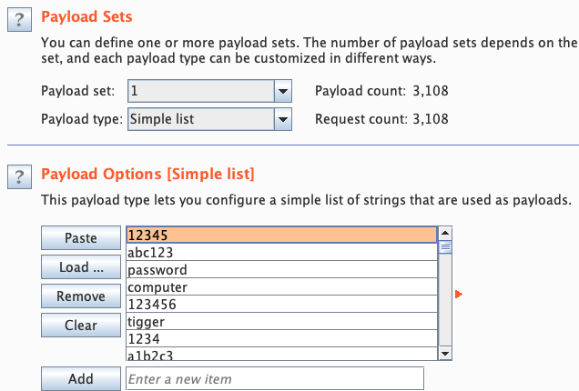
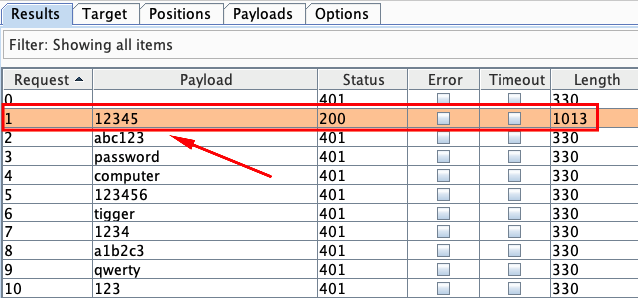

Mobile App Authentication Architectures¶
Authentication and authorization problems are prevalent security vulnerabilities. In fact, they consistently rank second highest in the OWASP Top 10.
Most mobile apps implement some kind of user authentication. Even though part of the authentication and state management logic is performed by the backend service, authentication is such an integral part of most mobile app architectures that understanding its common implementations is important.
Since the basic concepts are identical on iOS and Android, we'll discuss prevalent authentication and authorization architectures and pitfalls in this generic guide. OS-specific authentication issues, such as local and biometric authentication, will be discussed in the respective OS-specific chapters.
General Guidelines on Testing Authentication¶
There's no one-size-fits-all approach to authentication. When reviewing the authentication architecture of an app, you should first consider whether the authentication method(s) used are appropriate in the given context. Authentication can be based on one or more of the following:
- Something the user knows (password, PIN, pattern, etc.)
- Something the user has (SIM card, one-time password generator, or hardware token)
- A biometric property of the user (fingerprint, retina, voice)
The number of authentication procedures implemented by mobile apps depends on the sensitivity of the functions or accessed resources. Refer to industry best practices when reviewing authentication functions. Username/password authentication (combined with a reasonable password policy) is generally considered sufficient for apps that have a user login and aren't very sensitive. This form of authentication is used by most social media apps.
For sensitive apps, adding a second authentication factor is usually appropriate. This includes apps that provide access to very sensitive information (such as credit card numbers) or allow users to transfer funds. In some industries, these apps must also comply with certain standards. For example, financial apps have to ensure compliance with the Payment Card Industry Data Security Standard (PCI DSS), the Gramm Leach Bliley Act, and the Sarbanes-Oxley Act (SOX). Compliance considerations for the US health care sector include the Health Insurance Portability and Accountability Act (HIPAA) and the Patient Safety Rule.
You can also use the OWASP Mobile AppSec Verification Standard as a guideline. For non-critical apps ("Level 1"), the MASVS lists the following authentication requirements:
- If the app provides users with access to a remote service, an acceptable form of authentication such as username/password authentication is performed at the remote endpoint.
- A password policy exists and is enforced at the remote endpoint.
- The remote endpoint implements an exponential back-off, or temporarily locks the user account, when incorrect authentication credentials are submitted an excessive number of times.
For sensitive apps ("Level 2"), the MASVS adds the following:
- A second factor of authentication exists at the remote endpoint and the 2FA requirement is consistently enforced.
- Step-up authentication is required to enable actions that deal with sensitive data or transactions.
- The app informs the user of the recent activities with their account when they log in.
You can find details on how to test for the requirements above in the following sections.
Stateful vs. Stateless Authentication¶
You'll usually find that the mobile app uses HTTP as the transport layer. The HTTP protocol itself is stateless, so there must be a way to associate a user's subsequent HTTP requests with that user. Otherwise, the user's log in credentials would have to be sent with every request. Also, both the server and client need to keep track of user data (e.g., the user's privileges or role). This can be done in two different ways:
-
With stateful authentication, a unique session id is generated when the user logs in. In subsequent requests, this session ID serves as a reference to the user details stored on the server. The session ID is opaque; it doesn't contain any user data.
-
With stateless authentication, all user-identifying information is stored in a client-side token. The token can be passed to any server or micro service, eliminating the need to maintain session state on the server. Stateless authentication is often factored out to an authorization server, which produces, signs, and optionally encrypts the token upon user login.
Web applications commonly use stateful authentication with a random session ID that is stored in a client-side cookie. Although mobile apps sometimes use stateful sessions in a similar fashion, stateless token-based approaches are becoming popular for a variety of reasons:
- They improve scalability and performance by eliminating the need to store session state on the server.
- Tokens enable developers to decouple authentication from the app. Tokens can be generated by an authentication server, and the authentication scheme can be changed seamlessly.
As a mobile security tester, you should be familiar with both types of authentication.
Supplementary Authentication¶
Authentication schemes are sometimes supplemented by passive contextual authentication, which can incorporate:
- Geolocation
- IP address
- Time of day
- The device being used
Ideally, in such a system the user's context is compared to previously recorded data to identify anomalies that might indicate account abuse or potential fraud. This process is transparent to the user, but can become a powerful deterrent to attackers.
Verifying that Appropriate Authentication is in Place (MSTG-ARCH-2 and MSTG-AUTH-1)¶
Perform the following steps when testing authentication and authorization:
- Identify the additional authentication factors the app uses.
- Locate all endpoints that provide critical functionality.
- Verify that the additional factors are strictly enforced on all server-side endpoints.
Authentication bypass vulnerabilities exist when authentication state is not consistently enforced on the server and when the client can tamper with the state. While the backend service is processing requests from the mobile client, it must consistently enforce authorization checks: verifying that the user is logged in and authorized every time a resource is requested.
Consider the following example from the OWASP Web Testing Guide. In the example, a web resource is accessed through a URL, and the authentication state is passed through a GET parameter:
http://www.site.com/page.asp?authenticated=no
The client can arbitrarily change the GET parameters sent with the request. Nothing prevents the client from simply changing the value of the authenticated parameter to "yes", effectively bypassing authentication.
Although this is a simplistic example that you probably won't find in the wild, programmers sometimes rely on "hidden" client-side parameters, such as cookies, to maintain authentication state. They assume that these parameters can't be tampered with. Consider, for example, the following classic vulnerability in Nortel Contact Center Manager. The administrative web application of Nortel's appliance relied on the cookie "isAdmin" to determine whether the logged-in user should be granted administrative privileges. Consequently, it was possible to get admin access by simply setting the cookie value as follows:
isAdmin=True
Security experts used to recommend using session-based authentication and maintaining session data on the server only. This prevents any form of client-side tampering with the session state. However, the whole point of using stateless authentication instead of session-based authentication is to not have session state on the server. Instead, state is stored in client-side tokens and transmitted with every request. In this case, seeing client-side parameters such as isAdmin is perfectly normal.
To prevent tampering cryptographic signatures are added to client-side tokens. Of course, things may go wrong, and popular implementations of stateless authentication have been vulnerable to attacks. For example, the signature verification of some JSON Web Token (JWT) implementations could be deactivated by setting the signature type to "None". We'll discuss this attack in more detail in the "Testing JSON Web Tokens" chapter.
Testing Best Practices for Passwords (MSTG-AUTH-5 and MSTG-AUTH-6)¶
Password strength is a key concern when passwords are used for authentication. The password policy defines requirements to which end users should adhere. A password policy typically specifies password length, password complexity, and password topologies. A "strong" password policy makes manual or automated password cracking difficult or impossible. The following sections will cover various areas regarding password best practices. For further information please consult the OWASP Authentication Cheat Sheet.
Static Analysis¶
Confirm the existence of a password policy and verify the implemented password complexity requirements according to the OWASP Authentication Cheat Sheet which focuses on length and an unlimited character set. Identify all password-related functions in the source code and make sure that a verification check is performed in each of them. Review the password verification function and make sure that it rejects passwords that violate the password policy.
zxcvbn¶
zxcvbn is a common library that can be used for estimating password strength, inspired by password crackers. It is available in JavaScript but also for many other programming languages on the server side. There are different methods of installation, please check the Github repo for your preferred method. Once installed, zxcvbn can be used to calculate the complexity and the amount of guesses to crack the password.
After adding the zxcvbn JavaScript library to the HTML page, you can execute the command zxcvbn in the browser console, to get back detailed information about how likely it is to crack the password including a score.

The score is defined as follows and can be used for a password strength bar for example:
0 # too guessable: risky password. (guesses < 10^3)
1 # very guessable: protection from throttled online attacks. (guesses < 10^6)
2 # somewhat guessable: protection from unthrottled online attacks. (guesses < 10^8)
3 # safely unguessable: moderate protection from offline slow-hash scenario. (guesses < 10^10)
4 # very unguessable: strong protection from offline slow-hash scenario. (guesses >= 10^10)
Note that zxcvbn can be implemented by the app-developer as well using the Java (or other) implementation in order to guide the user into creating a strong password.
Have I Been Pwned: PwnedPasswords¶
In order to further reduce the likelihood of a successful dictionary attack against a single factor authentication scheme (e.g. password only), you can verify whether a password has been compromised in a data breach. This can be done using services based on the Pwned Passwords API by Troy Hunt (available at api.pwnedpasswords.com). For example, the "Have I been pwned?" companion website. Based on the SHA-1 hash of a possible password candidate, the API returns the number of times the hash of the given password has been found in the various breaches collected by the service. The workflow takes the following steps:
- Encode the user input to UTF-8 (e.g.: the password
test). - Take the SHA-1 hash of the result of step 1 (e.g.: the hash of
testisA94A8FE5CC...). - Copy the first 5 characters (the hash prefix) and use them for a range-search by using the following API:
http GET https://api.pwnedpasswords.com/range/A94A8 - Iterate through the result and look for the rest of the hash (e.g. is
FE5CC...part of the returned list?). If it is not part of the returned list, then the password for the given hash has not been found. Otherwise, as in case ofFE5CC..., it will return a counter showing how many times it has been found in breaches (e.g.:FE5CC...:76479).
Further documentation on the Pwned Passwords API can be found online.
Note that this API is best used by the app-developer when the user needs to register and enter a password to check whether it is a recommended password or not.
Login Throttling¶
Check the source code for a throttling procedure: a counter for logins attempted in a short period of time with a given user name and a method to prevent login attempts after the maximum number of attempts has been reached. After an authorized login attempt, the error counter should be reset.
Observe the following best practices when implementing anti-brute-force controls:
- After a few unsuccessful login attempts, targeted accounts should be locked (temporarily or permanently), and additional login attempts should be rejected.
- A five-minute account lock is commonly used for temporary account locking.
- The controls must be implemented on the server because client-side controls are easily bypassed.
- Unauthorized login attempts must be tallied with respect to the targeted account, not a particular session.
Additional brute force mitigation techniques are described on the OWASP page Blocking Brute Force Attacks.
Dynamic Testing (MSTG-AUTH-6)¶
Automated password guessing attacks can be performed using a number of tools. For HTTP(S) services, using an interception proxy is a viable option. For example, you can use Burp Suite Intruder to perform both wordlist-based and brute-force attacks.
Please keep in mind that the Burp Suite Community Edition has significant limitations apart from not being able to save projects. For example, a throttling mechanism will be activated after several requests that will slow down your attacks with Burp Intruder dramatically. Also no built-in password lists are available in this version. If you want to execute a real brute force attack use either Burp Suite Professional or OWASP ZAP.
Execute the following steps for a wordlist based brute force attack with Burp Intruder:
- Start Burp Suite Professional.
- Create a new project (or open an existing one).
- Set up your mobile device to use Burp as the HTTP/HTTPS proxy. Log into the mobile app and intercept the authentication request sent to the backend service.
- Right-click this request on the Proxy/HTTP History tab and select Send to Intruder in the context menu.
- Select the Intruder tab. For further information on how to use Burp Intruder read the official documentation on Portswigger.
- Make sure all parameters in the Target, Positions, and Options tabs are appropriately set and select the Payload tab.
- Load or paste the list of passwords you want to try. There are several resources available that offer password lists, like FuzzDB, the built-in lists in Burp Intruder or the files available in
/usr/share/wordlistson Kali Linux.
Once everything is configured and you have a word-list selected, you're ready to start the attack!

- Click the Start attack button to attack the authentication.
A new window will open. Site requests are sent sequentially, each request corresponding to a password from the list. Information about the response (length, status code, etc.) is provided for each request, allowing you to distinguish successful and unsuccessful attempts:

In this example, you can identify the successful attempt according to the different length and the HTTP status code, which reveals the password 12345.
To test if your own test accounts are prone to brute forcing, append the correct password of your test account to the end of the password list. The list shouldn't have more than 25 passwords. If you can complete the attack without permanently or temporarily locking the account or solving a CAPTCHA after a certain amount of requests with wrong passwords, that means the account isn't protected against brute force attacks.
Tip: Perform these kinds of tests only at the very end of your penetration test. You don't want to lock out your account on the first day of testing and potentially having to wait for it to be unlocked. For some projects unlocking accounts might be more difficult than you think.
Testing Stateful Session Management (MSTG-AUTH-2)¶
Stateful (or "session-based") authentication is characterized by authentication records on both the client and server. The authentication flow is as follows:
- The app sends a request with the user's credentials to the backend server.
- The server verifies the credentials If the credentials are valid, the server creates a new session along with a random session ID.
- The server sends to the client a response that includes the session ID.
- The client sends the session ID with all subsequent requests. The server validates the session ID and retrieves the associated session record.
- After the user logs out, the server-side session record is destroyed and the client discards the session ID.
When sessions are improperly managed, they are vulnerable to a variety of attacks that may compromise the session of a legitimate user, allowing the attacker to impersonate the user. This may result in lost data, compromised confidentiality, and illegitimate actions.
Session Management Best Practices¶
Locate any server-side endpoints that provide sensitive information or functions and verify the consistent enforcement of authorization. The backend service must verify the user's session ID or token and make sure that the user has sufficient privileges to access the resource. If the session ID or token is missing or invalid, the request must be rejected.
Make sure that:
- Session IDs are randomly generated on the server side.
- The IDs can't be guessed easily (use proper length and entropy).
- Session IDs are always exchanged over secure connections (e.g. HTTPS).
- The mobile app doesn't save session IDs in permanent storage.
- The server verifies the session whenever a user tries to access privileged application elements, (a session ID must be valid and must correspond to the proper authorization level).
- The session is terminated on the server side and session information deleted within the mobile app after it times out or the user logs out.
Authentication shouldn't be implemented from scratch but built on top of proven frameworks. Many popular frameworks provide ready-made authentication and session management functionality. If the app uses framework APIs for authentication, check the framework security documentation for best practices. Security guides for common frameworks are available at the following links:
A great resource for testing server-side authentication is the OWASP Web Testing Guide, specifically the Testing Authentication and Testing Session Management chapters.
Testing Session Timeout (MSTG-AUTH-7)¶
Minimizing the lifetime of session identifiers and tokens decreases the likelihood of successful account hijacking.
Static Analysis¶
In most popular frameworks, you can set the session timeout via configuration options. This parameter should be set according to the best practices specified in the framework documentation. The recommended timeout may be between 10 minutes and two hours, depending on the app's sensitivity. Refer to the framework documentation for examples of session timeout configuration:
Dynamic Analysis¶
To verify if a session timeout is implemented, proxy your requests through an interception proxy and perform the following steps:
- Log in to the application.
- Access a resource that requires authentication, typically a request for private information belonging to your account.
- Try to access the data after an increasing number of 5-minute delays has passed (5, 10, 15, ...).
- Once the resource is no longer available, you will know the session timeout.
After you have identified the session timeout, verify whether it has an appropriate length for the application. If the timeout is too long, or if the timeout does not exist, this test case fails.
When using Burp Proxy, you can use the Session Timeout Test extension to automate this test.
Testing User Logout (MSTG-AUTH-4)¶
The purpose of this test case is verifying logout functionality and determining whether it effectively terminates the session on both client and server and invalidates a stateless token.
Failing to destroy the server-side session is one of the most common logout functionality implementation errors. This error keeps the session or token alive, even after the user logs out of the application. An attacker who gets valid authentication information can continue to use it and hijack a user's account.
Many mobile apps don't automatically log users out. There can be various reasons, such as: because it is inconvenient for customers, or because of decisions made when implementing stateless authentication. The application should still have a logout function, and it should be implemented according to best practices, destroying all locally stored tokens or session identifiers. If session information is stored on the server, it should also be destroyed by sending a logout request to that server. In case of a high-risk application, tokens should be invalidated. Not removing tokens or session identifiers can result in unauthorized access to the application in case the tokens are leaked. Note that other sensitive types of information should be removed as well, as any information that is not properly cleared may be leaked later, for example during a device backup.
Static Analysis¶
If server code is available, make sure logout functionality terminates the session correctly. This verification will depend on the technology. Here are different examples of session termination for proper server-side logout:
If access and refresh tokens are used with stateless authentication, they should be deleted from the mobile device. The refresh token should be invalidated on the server.
Dynamic Analysis¶
Use an interception proxy for dynamic application analysis and execute the following steps to check whether the logout is implemented properly:
- Log in to the application.
- Access a resource that requires authentication, typically a request for private information belonging to your account.
- Log out of the application.
- Try to access the data again by resending the request from step 2.
If the logout is correctly implemented on the server, an error message or redirect to the login page will be sent back to the client. On the other hand, if you receive the same response you got in step 2, the token or session ID is still valid and hasn't been correctly terminated on the server. The OWASP Web Testing Guide (WSTG-SESS-06) includes a detailed explanation and more test cases.
Testing Two-Factor Authentication and Step-up Authentication (MSTG-AUTH-9 and MSTG-AUTH-10)¶
Two-factor authentication (2FA) is standard for apps that allow users to access sensitive functions and data. Common implementations use a password for the first factor and any of the following as the second factor:
- One-time password via SMS (SMS-OTP)
- One-time code via phone call
- Hardware or software token
- Push notifications in combination with PKI and local authentication
Whatever option is used as 2nd factor, it always must be enforced and verified on the server-side and never on client-side. Otherwise the 2nd factor can be easily bypassed within the app.
The secondary authentication can be performed at login or later in the user's session. For example, after logging in to a banking app with a username and PIN, the user is authorized to perform non-sensitive tasks. Once the user attempts to execute a bank transfer, the second factor ("step-up authentication") must be presented.
Dangers of SMS-OTP¶
Although one-time passwords (OTP) sent via SMS are a common second factor for two-factor authentication, this method has its shortcomings. In 2016, NIST suggested: "Due to the risk that SMS messages may be intercepted or redirected, implementers of new systems SHOULD carefully consider alternative authenticators.". Below you will find a list of some related threats and suggestions to avoid successful attacks on SMS-OTP.
Threats:
- Wireless Interception: The adversary can intercept SMS messages by abusing femtocells and other known vulnerabilities in the telecommunications network.
- Trojans: Installed malicious applications with access to text messages may forward the OTP to another number or backend.
- SIM SWAP Attack: In this attack, the adversary calls the phone company, or works for them, and has the victim's number moved to a SIM card owned by the adversary. If successful, the adversary can see the SMS messages which are sent to the victim's phone number. This includes the messages used in the two-factor authentication.
- Verification Code Forwarding Attack: This social engineering attack relies on the trust the users have in the company providing the OTP. In this attack, the user receives a code and is later asked to relay that code using the same means in which it received the information.
- Voicemail: Some two-factor authentication schemes allow the OTP to be sent through a phone call when SMS is no longer preferred or available. Many of these calls, if not answered, send the information to voicemail. If an attacker was able to gain access to the voicemail, they could also use the OTP to gain access to a user's account.
You can find below several suggestions to reduce the likelihood of exploitation when using SMS for OTP:
- Messaging: When sending an OTP via SMS, be sure to include a message that lets the user know 1) what to do if they did not request the code 2) your company will never call or text them requesting that they relay their password or code.
- Dedicated Channel: When using the OS push notification feature (APN on iOS and FCM on Android), OTPs can be sent securely to a registered application. This information is, compared to SMS, not accessible by other applications. Alternatively of a OTP the push notification could trigger a pop-up to approve the requested access.
- Entropy: Use authenticators with high entropy to make OTPs harder to crack or guess and use at least 6 digits. Make sure that digits are separates in smaller groups in case people have to remember them to copy them to your app.
- Avoid Voicemail: If a user prefers to receive a phone call, do not leave the OTP information as a voicemail.
Transaction Signing with Push Notifications and PKI¶
Another alternative and strong mechanisms to implement a second factor is transaction signing.
Transaction signing requires authentication of the user's approval of critical transactions. Asymmetric cryptography is the best way to implement transaction signing. The app will generate a public/private key pair when the user signs up, then registers the public key on the backend. The private key is securely stored in the KeyStore (Android) or KeyChain (iOS). To authorize a transaction, the backend sends the mobile app a push notification containing the transaction data. The user is then asked to confirm or deny the transaction. After confirmation, the user is prompted to unlock the Keychain (by entering the PIN or fingerprint), and the data is signed with user's private key. The signed transaction is then sent to the server, which verifies the signature with the user's public key.
Static Analysis¶
There are various two-factor authentication mechanism available which can range from 3rd party libraries, usage of external apps to self implemented checks by the developer(s).
Use the app first and identify where 2FA is needed in the workflows (usually during login or when executing critical transactions). Do also interview the developer(s) and/or architects to understand more about the 2FA implementation. If a 3rd party library or external app is used, verify if the implementation was done accordingly to the security best practices.
Dynamic Testing¶
Use the app extensively (going through all UI flows) while using an interception proxy to capture the requests sent to remote endpoints. Next, replay requests to endpoints that require 2FA (e.g., performing a financial transactions) while using a token or session ID that hasn't yet been elevated via 2FA or step-up authentication. If an endpoint is still sending back requested data that should only be available after 2FA or step-up authentication, authentication checks haven't been properly implemented at that endpoint.
When OTP authentication is used, consider that most OTPs are short numeric values. An attacker can bypass the second factor by brute-forcing the values within the range at the lifespan of the OTP if the accounts aren't locked after N unsuccessful attempts at this stage. The probability of finding a match for 6-digit values with a 30-second time step within 72 hours is more than 90%.
To test this, the captured request should be sent 10-15 times to the endpoint with random OTP values before providing the correct OTP. If the OTP is still accepted the 2FA implementation is prone to brute force attacks and the OTP can be guessed.
A OTP should be valid for only a certain amount of time (usually 30 seconds) and after keying in the OTP wrongly several times (usually 3 times) the provided OTP should be invalidated and the user should be redirected to the landing page or logged out.
You should check if the app relies on static responses from the remote endpoint such as "message":"Success" to grant access to app internal sensitive data or functions. If that's the case, an attacker could easily bypass the 2FA implementation by manipulating the server response e.g. by using an interception proxy such as Burp Suite and modifying the response to be "message":"Success".
To prevent these kind of attacks, the application should always verify some kind of user token or other dynamic information related to the user that was previously securely stored (e.g. in the Keychain/KeyStore).
Consult the OWASP Testing Guide for more information about testing session management.
Testing Stateless (Token-Based) Authentication (MSTG-AUTH-3)¶
Token-based authentication is implemented by sending a signed token (verified by the server) with each HTTP request. The most commonly used token format is the JSON Web Token, defined in RFC7519. A JWT may encode the complete session state as a JSON object. Therefore, the server doesn't have to store any session data or authentication information.
JWT tokens consist of three Base64Url-encoded parts separated by dots. The Token structure is as follows:
base64UrlEncode(header).base64UrlEncode(payload).base64UrlEncode(signature)
The following example shows a Base64Url-encoded JSON Web Token:
eyJhbGciOiJIUzI1NiIsInR5cCI6IkpXVCJ9.eyJzdWIiOiIxMjM0NTY3ODkwIiwibmFtZSI6Ikpva
G4gRG9lIiwiYWRtaW4iOnRydWV9.TJVA95OrM7E2cBab30RMHrHDcEfxjoYZgeFONFh7HgQ
The header typically consists of two parts: the token type, which is JWT, and the hashing algorithm being used to compute the signature. In the example above, the header decodes as follows:
{"alg":"HS256","typ":"JWT"}
The second part of the token is the payload, which contains so-called claims. Claims are statements about an entity (typically, the user) and additional metadata. For example:
{"sub":"1234567890","name":"John Doe","admin":true}
The signature is created by applying the algorithm specified in the JWT header to the encoded header, encoded payload, and a secret value. For example, when using the HMAC SHA256 algorithm the signature is created in the following way:
HMACSHA256(base64UrlEncode(header) + "." + base64UrlEncode(payload), secret)
Note that the secret is shared between the authentication server and the backend service - the client does not know it. This proves that the token was obtained from a legitimate authentication service. It also prevents the client from tampering with the claims contained in the token.
Static Analysis¶
Identify the JWT library that the server and client use. Find out whether the JWT libraries in use have any known vulnerabilities.
Verify that the implementation adheres to JWT best practices:
- Verify that the HMAC is checked for all incoming requests containing a token;
- Verify the location of the private signing key or HMAC secret key. The key should remain on the server and should never be shared with the client. It should be available for the issuer and verifier only.
- Verify that no sensitive data, such as personal identifiable information, is embedded in the JWT. If, for some reason, the architecture requires transmission of such information in the token, make sure that payload encryption is being applied. See the sample Java implementation on the OWASP JWT Cheat Sheet.
- Make sure that replay attacks are addressed with the
jti(JWT ID) claim, which gives the JWT a unique identifier. - Make sure that cross service relay attacks are addressed with the
aud(audience) claim, which defines for which application the token is entitled. - Verify that tokens are stored securely on the mobile phone, with, for example, KeyChain (iOS) or KeyStore (Android).
Enforcing the Hashing Algorithm¶
An attacker executes this by altering the token and, using the 'none' keyword, changing the signing algorithm to indicate that the integrity of the token has already been verified. Some libraries might treat tokens signed with the 'none' algorithm as if they were valid tokens with verified signatures, so the application will trust altered token claims.
For example, in Java applications, the expected algorithm should be requested explicitly when creating the verification context:
// HMAC key - Block serialization and storage as String in JVM memory
private transient byte[] keyHMAC = ...;
//Create a verification context for the token requesting explicitly the use of the HMAC-256 HMAC generation
JWTVerifier verifier = JWT.require(Algorithm.HMAC256(keyHMAC)).build();
//Verify the token; if the verification fails then an exception is thrown
DecodedJWT decodedToken = verifier.verify(token);
Token Expiration¶
Once signed, a stateless authentication token is valid forever unless the signing key changes. A common way to limit token validity is to set an expiration date. Make sure that the tokens include an "exp" expiration claim and the backend doesn't process expired tokens.
A common method of granting tokens combines access tokens and refresh tokens. When the user logs in, the backend service issues a short-lived access token and a long-lived refresh token. The application can then use the refresh token to obtain a new access token, if the access token expires.
For apps that handle sensitive data, make sure that the refresh token expires after a reasonable period of time. The following example code shows a refresh token API that checks the refresh token's issue date. If the token is not older than 14 days, a new access token is issued. Otherwise, access is denied and the user is prompted to login again.
app.post('/renew_access_token', function (req, res) {
// verify the existing refresh token
var profile = jwt.verify(req.body.token, secret);
// if refresh token is more than 14 days old, force login
if (profile.original_iat - new Date() > 14) { // iat == issued at
return res.send(401); // re-login
}
// check if the user still exists or if authorization hasn't been revoked
if (!valid) return res.send(401); // re-logging
// issue a new access token
var renewed_access_token = jwt.sign(profile, secret, { expiresInMinutes: 60*5 });
res.json({ token: renewed_access_token });
});
Dynamic Analysis¶
Investigate the following JWT vulnerabilities while performing dynamic analysis:
- Token Storage on the client:
- The token storage location should be verified for mobile apps that use JWT.
- Cracking the signing key:
- Token signatures are created via a private key on the server. After you obtain a JWT, choose a tool for brute forcing the secret key offline.
- Information Disclosure:
- Decode the Base64Url-encoded JWT and find out what kind of data it transmits and whether that data is encrypted.
- Tampering with the Hashing Algorithm:
- Usage of asymmetric algorithms. JWT offers several asymmetric algorithms as RSA or ECDSA. When these algorithms are used, tokens are signed with the private key and the public key is used for verification. If a server is expecting a token to be signed with an asymmetric algorithm and receives a token signed with HMAC, it will treat the public key as an HMAC secret key. The public key can then be misused, employed as an HMAC secret key to sign the tokens.
- Modify the
algattribute in the token header, then deleteHS256, set it tonone, and use an empty signature (e.g., signature = ""). Use this token and replay it in a request. Some libraries treat tokens signed with the none algorithm as a valid token with a verified signature. This allows attackers to create their own "signed" tokens.
There are two different Burp Plugins that can help you for testing the vulnerabilities listed above:
Also, make sure to check out the OWASP JWT Cheat Sheet for additional information.
Testing OAuth 2.0 Flows (MSTG-AUTH-1 and MSTG-AUTH-3)¶
OAuth 2.0 defines a delegation protocol for conveying authorization decisions across APIs and a network of web-enabled applications. It is used in a variety of applications, including user authentication applications.
Common uses for OAuth2 include:
- Getting permission from the user to access an online service using their account.
- Authenticating to an online service on behalf of the user.
- Handling authentication errors.
According to OAuth 2.0, a mobile client seeking access to a user's resources must first ask the user to authenticate against an authentication server. With the users' approval, the authorization server then issues a token that allows the app to act on behalf of the user. Note that the OAuth2 specification doesn't define any particular kind of authentication or access token format.
OAuth 2.0 defines four roles:
- Resource Owner: the account owner
- Client: the application that wants to access the user's account with the access tokens
- Resource Server: hosts the user accounts
- Authorization Server: verifies user identity and issues access tokens to the application
Note: The API fulfills both the Resource Owner and Authorization Server roles. Therefore, we will refer to both as the API.

Here is a more detailed explanation of the steps in the diagram:
- The application requests user authorization to access service resources.
- If the user authorizes the request, the application receives an authorization grant. The authorization grant may take several forms (explicit, implicit, etc.).
- The application requests an access token from the authorization server (API) by presenting authentication of its own identity along with the authorization grant.
- If the application identity is authenticated and the authorization grant is valid, the authorization server (API) issues an access token to the application, completing the authorization process. The access token may have a companion refresh token.
- The application requests the resource from the resource server (API) and presents the access token for authentication. The access token may be used in several ways (e.g., as a bearer token).
- If the access token is valid, the resource server (API) serves the resource to the application.
OAUTH 2.0 Best Practices¶
Verify that the following best practices are followed:
User agent:
- The user should have a way to visually verify trust (e.g., Transport Layer Security (TLS) confirmation, website mechanisms).
- To prevent man-in-the-middle attacks, the client should validate the server's fully qualified domain name with the public key the server presented when the connection was established.
Type of grant:
- On native apps, code grant should be used instead of implicit grant.
- When using code grant, PKCE (Proof Key for Code Exchange) should be implemented to protect the code grant. Make sure that the server also implements it.
- The auth "code" should be short-lived and used immediately after it is received. Verify that auth codes only reside on transient memory and aren't stored or logged.
Client secrets:
- Shared secrets should not be used to prove the client's identity because the client could be impersonated ("client_id" already serves as proof). If they do use client secrets, be sure that they are stored in secure local storage.
End-User credentials:
- Secure the transmission of end-user credentials with a transport-layer method, such as TLS.
Tokens:
- Keep access tokens in transient memory.
- Access tokens must be transmitted over an encrypted connection.
- Reduce the scope and duration of access tokens when end-to-end confidentiality can't be guaranteed or the token provides access to sensitive information or transactions.
- Remember that an attacker who has stolen tokens can access their scope and all resources associated with them if the app uses access tokens as bearer tokens with no other way to identify the client.
- Store refresh tokens in secure local storage; they are long-term credentials.
External User Agent vs. Embedded User Agent¶
OAuth2 authentication can be performed either through an external user agent (e.g. Chrome or Safari) or in the app itself (e.g. through a WebView embedded into the app or an authentication library). None of the two modes is intrinsically "better" - instead, what mode to choose depends on the context.
Using an external user agent is the method of choice for apps that need to interact with social media accounts (Facebook, Twitter, etc.). Advantages of this method include:
-
The user's credentials are never directly exposed to the app. This guarantees that the app cannot obtain the credentials during the login process ("credential phishing").
-
Almost no authentication logic must be added to the app itself, preventing coding errors.
On the negative side, there is no way to control the behavior of the browser (e.g. to activate certificate pinning).
For apps that operate within a closed ecosystem, embedded authentication is the better choice. For example, consider a banking app that uses OAuth2 to retrieve an access token from the bank's authentication server, which is then used to access a number of micro services. In that case, credential phishing is not a viable scenario. It is likely preferable to keep the authentication process in the (hopefully) carefully secured banking app, instead of placing trust on external components.
Other OAuth2 Best Practices¶
For additional best practices and detailed information please refer to the following source documents:
- RFC6749 - The OAuth 2.0 Authorization Framework (October 2012)
- RFC8252 - OAuth 2.0 for Native Apps (October 2017)
- RFC6819 - OAuth 2.0 Threat Model and Security Considerations (January 2013)
Testing Login Activity and Device Blocking (MSTG-AUTH-11)¶
For applications which require L2 protection, the MASVS states that they should inform the user about all login activities within the app with the possibility of blocking certain devices. This can be broken down into various scenarios:
- The application provides a push notification the moment their account is used on another device to notify the user of different activities. The user can then block this device after opening the app via the push-notification.
- The application provides an overview of the last session after login. If the previous session was with a different configuration (e.g. location, device, app-version) compared to the current configuration, then the user should have the option to report suspicious activities and block devices used in the previous session.
- The application provides an overview of the last session after login at all times.
- The application has a self-service portal in which the user can see an audit-log. This allows the user to manage the different devices that are logged in.
The developer can make use of specific meta-information and associate it to each different activity or event within the application. This will make it easier for the user to spot suspicious behavior and block the corresponding device. The meta-information may include:
- Device: The user can clearly identify all devices where the app is being used.
- Date and Time: The user can clearly see the latest date and time when the app was used.
- Location: The user can clearly identify the latest locations where the app was used.
The application can provide a list of activities history which will be updated after each sensitive activity within the application. The choice of which activities to audit needs to be done for each application based on the data it handles and the level of security risk the team is willing to have. Below is a list of common sensitive activities that are usually audited:
- Login attempts
- Password changes
- Personal Identifiable Information changes (name, email address, telephone number, etc.)
- Sensitive activities (purchase, accessing important resources, etc.)
- Consent to Terms and Conditions clauses
Paid content requires special care, and additional meta-information (e.g., operation cost, credit, etc.) might be used to ensure user's knowledge about the whole operation's parameters.
In addition, non-repudiation mechanisms should be applied to sensitive transactions (e.g. paid content access, given consent to Terms and Conditions clauses, etc.) in order to prove that a specific transaction was in fact performed (integrity) and by whom (authentication).
In all cases, you should verify whether different devices are detected correctly. Therefore, the binding of the application to the actual device should be tested.
In iOS, a developer can use identifierForVendor, which is related to the bundle ID: the moment you change a bundle ID, the method will return a different value. When the app is ran for the first time, make sure you store the value returned by identifierForVendor to the KeyChain, so that changes to it can be detected at an early stage.
In Android, the developer can use Settings.Secure.ANDROID_ID till Android 8.0 (API level 26) to identify an application instance. Note that starting at Android 8.0 (API level 26), ANDROID_ID is no longer a device unique ID. Instead, it becomes scoped by the combination of app signing key, user and device. So validating ANDROID_ID for device blocking could be tricky for these Android versions. Because if an app changes its signing key, the ANDROID_ID will change and it won't be able to recognize old users devices. Therefore, it's better to store the ANDROID_ID encrypted and privately in a private a shared preferences file using a randomly generated key from the AndroidKeyStore and preferably AES_GCM encryption. The moment the app signature changes, the application can check for a delta and register the new ANDROID_ID. The moment this new ID changes without a new application signing key, it should indicate that something else is wrong.
Next, the device binding can be extended by signing requests with a key stored in the Keychain for iOS and in the KeyStore in Android can reassure strong device binding.
You should also test if using different IPs, different locations and/or different time-slots will trigger the right type of information in all scenarios.
Lastly, the blocking of the devices should be tested, by blocking a registered instance of the app and see if it is then no longer allowed to authenticate. Note: in case of an application which requires L2 protection, it can be a good idea to warn a user even before the first authentication on a new device. Instead: warn the user already when a second instance of the app is registered.
References¶
OWASP MASVS¶
- MSTG-ARCH-2: "Security controls are never enforced only on the client side, but on the respective remote endpoints."
- MSTG-AUTH-1: "If the app provides users access to a remote service, some form of authentication, such as username/password authentication, is performed at the remote endpoint."
- MSTG-AUTH-2: "If stateful session management is used, the remote endpoint uses randomly generated session identifiers to authenticate client requests without sending the user's credentials."
- MSTG-AUTH-3: "If stateless token-based authentication is used, the server provides a token that has been signed using a secure algorithm."
- MSTG-AUTH-4: "The remote endpoint terminates the existing session when the user logs out."
- MSTG-AUTH-5: "A password policy exists and is enforced at the remote endpoint."
- MSTG-AUTH-6: "The remote endpoint implements a mechanism to protect against the submission of credentials an excessive number of times."
- MSTG-AUTH-7: "Sessions are invalidated at the remote endpoint after a predefined period of inactivity and access tokens expire."
- MSTG-AUTH-9: "A second factor of authentication exists at the remote endpoint and the 2FA requirement is consistently enforced."
- MSTG-AUTH-10: "Sensitive transactions require step-up authentication."
- MSTG-AUTH-11: "The app informs the user of all sensitive activities with their account. Users are able to view a list of devices, view contextual information (IP address, location, etc.), and to block specific devices."
SMS-OTP Research¶
- [#dmitrienko] Dmitrienko, Alexandra, et al. "On the (in) security of mobile two-factor authentication." International Conference on Financial Cryptography and Data Security. Springer, Berlin, Heidelberg, 2014.
- [#grassi] Grassi, Paul A., et al. Digital identity guidelines: Authentication and lifecycle management (DRAFT). No. Special Publication (NIST SP)-800-63B. 2016.
- [#grassi2] Grassi, Paul A., et al. Digital identity guidelines: Authentication and lifecycle management. No. Special Publication (NIST SP)-800-63B. 2017.
- [#konoth] Konoth, Radhesh Krishnan, Victor van der Veen, and Herbert Bos. "How anywhere computing just killed your phone-based two-factor authentication." International Conference on Financial Cryptography and Data Security. Springer, Berlin, Heidelberg, 2016.
- [#mulliner] Mulliner, Collin, et al. "SMS-based one-time passwords: attacks and defense." International Conference on Detection of Intrusions and Malware, and Vulnerability Assessment. Springer, Berlin, Heidelberg, 2013.
- [#siadati] Siadati, Hossein, et al. "Mind your SMSes: Mitigating social engineering in second factor authentication." Computers & Security 65 (2017): 14-28.
- [#siadati2] Siadati, Hossein, Toan Nguyen, and Nasir Memon. "Verification code forwarding attack (short paper)." International Conference on Passwords. Springer, Cham, 2015.